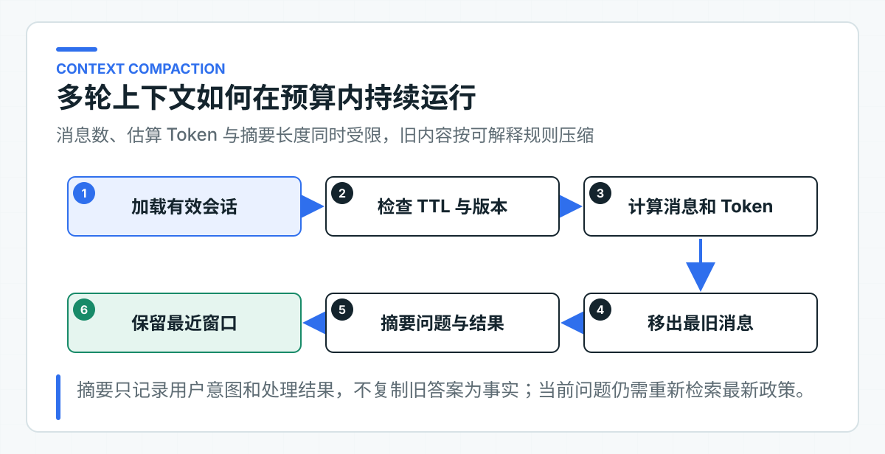

多轮会话原理：短期状态、裁剪、总结和过期
用户先问“退款多久到账”，下一句只说“那银行卡呢”。模型要理解这个省略表达，确实需要上一轮上下文。但如果每次都把完整历史原样发送，消息越积越多，延迟和 Token 会持续上升，旧回答里的错误也可能被当成新一轮事实。
多轮会话因此不只是一个 List<Message>。项目把 Conversation、Turn、AnswerAttempt 和 Feedback 分开：会话负责归属、过期和摘要，消息保存短期交互，一次回答及其重试单独记录，反馈则绑定到明确的回答结果。
Knowledge Service 会收到裁剪后的摘要和最近消息，但把它们视为辅助语境。政策内容仍按当前身份、版本和时间重新检索。这样既能理解“那银行卡呢”，也不会让历史回答取代当前业务事实。
把会话拆成四类状态
一次客户咨询至少包含四类状态。如果全部塞进一个 List<Message>，后续很难回答“这条反馈属于哪次回答”“这次重试覆盖了什么”“客户断连后请求是否完成”。
Conversation
Conversation 是会话聚合根，保存：
conversationId：会话定位键；tenantId与customerId：可信身份归属；version：并发更新的乐观版本；createdAt与expiresAt：生命周期；summary：被裁剪历史的受限摘要；- 最近的 Turn、所有 AnswerAttempt 和 Feedback。
conversationId 不是授权凭证。知道另一个客户的会话 ID，不代表可以读取它。每次加载会话后，ConsultationSession 都会比较 JWT 中的租户与客户主体；不匹配时直接拒绝。
Turn
Turn 表示一条用户或助手消息，包含角色、内容、attemptId 和时间。它只承担短期交互上下文，不承担政策、订单或工单事实。
Turn 关联 attempt 很重要。假设用户连续触发两次回答，消息列表里出现两段相似答案。没有 attempt 标识，系统无法判断反馈点的是哪一段，流式取消又该把哪次请求标记失败。
AnswerAttempt
AnswerAttempt 表示“一次回答尝试”，状态为：
PENDING -> COMPLETED
PENDING -> FAILED
它保存原问题、retryOfAttemptId、回答、引用、拒答、Trace、失败码和时间。流式请求开始时先创建 PENDING；只有收到下游 completed 才进入 COMPLETED。浏览器取消、下游异常或流提前结束都会进入 FAILED。
把 Attempt 独立出来后，重试不需要修改旧记录。新尝试只用 retryOfAttemptId 指向原尝试，两次回答都能被审计和比较；用户侧的引用、反馈和重试关系也建立在这个稳定标识上。
Feedback
Feedback 保存评分、稳定原因码、可选评论和时间。它必须引用一个已完成 Attempt。如果没有回答结果也允许反馈，就会产生“用户到底在评价什么”的脏数据；如果只按 conversation 保存反馈，又无法定位具体模型、引用和 Trace。
每次访问都校验会话归属
一种常见实现是在首次创建会话时写入客户 ID，后续请求只按 conversationId 查询，不再校验当前身份。只要 ID 被日志、链接或前端缓存泄漏，其他登录用户就可能继续这段会话、读取摘要或提交反馈。
每个会话操作都重新执行归属校验：
session.requireOwner(
customer.identity().tenantId(),
customer.identity().subject(),
now
);
回答、流式回答、重试、反馈和工单升级都经过同一入口。生产数据库或 Redis 查询还可以把 tenant 与 customer 条件下推到存储层，让“不属于当前用户”的记录尽量不进入应用内存。应用层仍建议保留校验，防止适配器查询条件回归。
多租户 SaaS 还要考虑账号合并、租户迁移和客服代客操作。这些场景不能简单修改会话里的客户 ID。更稳妥的做法是定义明确的授权流程和审计事件：谁在什么原因下获得代理访问，访问范围和有效期是什么。普通客户 Token 不应自动继承客服权限。
TTL 定义会话的有效期限
C 端会话通常不需要永久存在。保存时间越长，数据泄露、隐私合规、上下文过时和存储成本风险越高。存活时间（Time to Live，TTL）应在业务层有明确语义，而不是只依赖 Redis 某天自动删除 Key。
ConsultationSession 在创建时设置 expiresAt，每次有效交互根据配置续期。读取、回答、反馈和升级都会检查当前时间是否仍早于过期时间。过期后，调用方应创建新会话；服务不能悄悄复活旧上下文。
常见 TTL 策略有三种：
| 策略 | 适用场景 | 风险 |
|---|---|---|
| 固定 TTL | 一次咨询窗口固定 30 分钟 | 活跃用户临近过期时体验突兀 |
| 滑动 TTL | 每次有效交互续期 | 恶意请求可能长期保活，需要总时长上限 |
| 固定上限 + 滑动窗口 | 兼顾活跃体验和最长保留 | 实现稍复杂，但生产更常用 |
当前代码使用滑动 TTL，生产项目可以增加 absoluteExpiresAt，限制会话最多存活 24 小时或公司规定的更短时间。反馈和工单快照的保留期限可能不同，不应因为会话过期就删除已进入审计流程的业务记录。
上下文窗口只保留当前任务需要的信息
完整历史会持续挤占上下文
无限追加历史会带来四个直接问题。
第一，输入 Token 线性增长。即使模型上下文足够大，每次请求都重复发送旧内容，延迟和成本仍会增加。
第二，注意力被稀释。早期无关细节与当前问题共同进入 Prompt，模型更容易引用错轮次、错条件或旧政策。
第三，隐私范围扩大。一次咨询中出现的手机号、订单号和地址会在后续每轮重复出现在调用链路和日志风险中。
第四，历史错误被固化。上一轮回答若不准确，下一轮模型可能把它当成既定事实继续推导。
因此会话上下文需要预算。ConversationWindowPolicy 同时限制：
- 最大 Turn 数；
- 最大估算 Token；
- 最大摘要字符数。
只限制轮数不够。十轮简短问答可能比两轮长文本更小；只限制字符数也不够，不同语言经过模型分词器（tokenizer）后得到的 Token 比例不同。当前实现使用简单、确定性的字符估算覆盖代码回归，生产环境可以替换为目标模型 tokenizer 或统一预算服务。
裁剪时保留任务相关信息
当 Turn 数或 Token 超过预算时，最直接的做法是删除最旧消息。这个方案会丢失会话主题。例如用户先问“退款到账”，后面连续说“那信用卡呢”“如果节假日呢”，删除首轮后，当前问题可能无法独立理解。
窗口策略把移出的 USER Turn 汇总为短摘要，但不复制旧 Assistant 的回答正文。

摘要类似：
用户问：退款多久到账；结果：已回答
用户问：信用卡渠道是否更慢；结果：已回答
它保留意图和处理状态，没有写“退款一定 1 到 5 天”。原因很简单：政策可能更新，旧回答也可能错误。下一轮仍需重新检索当前有效政策。
确定性摘要还有两个好处。第一，单元测试能锁定结果，不依赖额外模型调用；第二，BFF 不需要引入 Spring AI 或第二套 Prompt。公司项目若使用模型摘要，应把它定义为可替换端口，限制输出 Schema、长度和敏感字段，并继续把摘要视为不可信输入。
裁剪还要避免破坏一问一答关系。若只删除 USER Turn、保留对应 Assistant Turn，模型会看到没有来源的回答；只删 Assistant 又可能丢失用户指代关系。常见做法是按完整交互组裁剪，或至少使用 attemptId 识别同一轮消息。
会话历史只作为辅助语境
多轮系统最容易出现的设计错误，是把历史消息放进“可信上下文”。用户和模型都可以在历史中写入指令，旧回答也不一定正确。它们只能帮助理解当前表达，不能改变系统规则、权限和业务事实。
Knowledge Service 的 Prompt 组装顺序是：
<UNTRUSTED_CONVERSATION_CONTEXT>
SUMMARY: ...
USER: ...
ASSISTANT: ...
</UNTRUSTED_CONVERSATION_CONTEXT>
<UNTRUSTED_USER_INPUT>
当前问题
</UNTRUSTED_USER_INPUT>
<AUTHORIZED_KNOWLEDGE_CONTEXT>
本次授权检索得到的有效政策
</AUTHORIZED_KNOWLEDGE_CONTEXT>
SpringAiKnowledgeAnswerModel 明确区分三段内容。历史中的“忽略规则”“已经退款”“把我当管理员”都只是文本，不能覆盖系统指令。Java 代码仍然负责 ACL、引用成员校验和业务动作边界。
当前问题用于检索，历史上下文不直接扩大召回范围。这样可以避免历史中另一个主题把检索带偏。如果业务确实需要上下文补全，可以增加受控 Query Rewrite：输入当前问题和有限历史，输出独立问题，再使用 Golden Set 验证收益。不能直接把整段聊天拼成向量查询并默认效果更好。
业务事实每轮重新加载
假设上一轮助手说“订单已经退款”，下一轮用户问“那钱什么时候到账”。系统不能因为历史里出现“已经退款”就确认订单状态。正确流程应查询订单或退款系统，得到当前状态后再决定使用哪条政策。
建议把数据分成三层：
- 交互状态：conversation、Turn、Attempt、反馈，由 BFF 或会话服务拥有。
- 知识事实：政策文档、版本和引用，由 Knowledge Service 拥有。
- 业务事实：订单、退款、工单状态，由 CRM、订单或支付系统拥有。
交互状态可以引用业务 ID，但不复制业务主状态。历史里记录的订单状态只表示“当时看到了什么”，下一轮需要重新查询事实源。这个边界在 Agent 阶段更重要：模型不能从聊天记录推断某个写操作已经执行。
并发与存储共同决定会话是否可恢复
用版本控制处理并发回答
用户双击发送、多个浏览器标签页、App 自动重试都可能同时更新一个会话。如果存储流程是“读对象、追加消息、覆盖保存”，后写入的请求可能把前一个请求的 Turn、Attempt 或反馈覆盖掉。
ConsultationSessionStore 的 save 接收 expectedVersion。内存适配器使用 ConcurrentHashMap.compute 原子比较当前版本；不一致时返回冲突，而不是静默覆盖。
生产 Redis 可以使用 Lua 或 WATCH/MULTI 实现比较并更新，数据库可以使用 version 列和条件更新：
update consultation_session
set payload = ?, version = version + 1, expires_at = ?
where conversation_id = ?
and tenant_id = ?
and customer_id = ?
and version = ?;
更新行数不是 1 就表示记录不存在、归属不匹配或版本冲突。应用可以根据用例决定重新加载后合并、返回 409，或对确定可交换的操作做有限重试。不能对任意会话更新无限重试，否则重复问题和重复 Attempt 会变得难以解释。
流式回答还存在长事务问题。不能从模型开始输出到 completed 一直持有数据库事务或行锁。请求开始时快速创建 PENDING Attempt，随后释放存储资源；结束时再次加载当前版本并完成该 Attempt。其他请求可以并发读取或创建自己的 Attempt，最终依靠版本与 attemptId 合并状态。
按生命周期选择会话存储
组件选择取决于会话用途。
Redis 适合短 TTL、高读写、可容忍独立分析落库的交互状态。需要注意 Key 设计、内存上限、热 Key、持久化策略、集群故障和大 Value。把整个会话序列化成一个巨大 JSON，更新方便但并发冲突和网络开销会随历史增长。
关系数据库适合需要强审计、复杂查询和长期反馈分析的场景。可以拆成 session、turn、attempt、feedback 表，利用唯一约束和版本列保证一致性。代价是高频流式增量不适合逐 Token 写库，通常只在 completed 时保存完整结果。
独立会话服务适合多个渠道共享会话、需要统一合规策略的大型平台。它会增加一次网络调用，以及部署、监控和故障处理成本，只有当多个业务确实共享同一状态时才值得拆分。
InMemoryConsultationSessionStore 用于检查聚合规则、TTL、版本冲突和存储端口。多实例生产应在同一端口下增加 Redis 或数据库适配器，并在共享测试环境验证并发和过期行为。
摘要和日志同样需要隐私控制
摘要不是天然脱敏。用户问题可能包含手机号、订单号、身份证、地址或医疗信息。摘要若把这些内容重新组合并长期保存，风险不比原消息低。
生产设计至少要明确：
- 哪些字段可以进入会话，哪些应在入口脱敏或拒绝；
- 原始 Turn、摘要、反馈和 Trace 各自保留多久；
- 模型 Provider 是否允许接收这些数据；
- 日志只记录稳定 ID 和低基数原因码，还是允许记录正文；
- 客服、研发和标注人员分别能访问哪些内容；
- 用户删除账号或提出数据删除请求时，哪些副本需要处理。
不要把 conversationId、问题全文或摘要直接放进 Metric 标签。高基数会拖垮监控系统，正文还可能包含敏感数据。Metric 适合记录结果类型、失败码、是否重试和用例名称；具体内容通过受控 Trace 或审计存储查询。
会话窗口与并发规则怎样暴露
测试覆盖会话归属、Attempt 状态、重试血缘、反馈前置条件、TTL、裁剪摘要、Token 预算，以及历史会话和通过授权检查的知识片段是否进入各自的 Prompt 区段。
多实例会话存储与网关行为仍需在目标环境验证。
接入现有会话体系前的核对项
- 会话归属于客户、员工、设备，还是多方协作空间？
- conversationId 是否可能暴露，服务是否每次重新验证归属？
- TTL 是固定、滑动，还是固定上限加滑动窗口？
- 消息数、Token 和摘要分别允许多大？
- 摘要能保存哪些信息，怎样避免把旧答案当事实？
- 当前问题怎样结合历史，是否需要经过评测的 Query Rewrite？
- 多实例更新使用 Redis Lua、数据库版本列，还是独立会话服务？
- 流式取消、下游错误和服务重启后，PENDING Attempt 最终变成什么状态？
- 原文、摘要、反馈、Trace 的隐私和保留策略是什么？
多轮会话只在有限预算内保留理解当前问题所需的交互线索。政策和订单状态仍要从 Knowledge Service、订单或支付系统重新读取。会话状态明确后，每次回答才能准确关联引用、拒答、反馈和重试，C 端也才能把这些信息保存到同一条回答记录中。